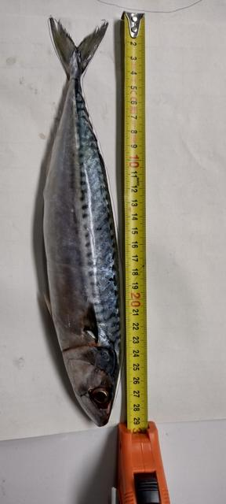
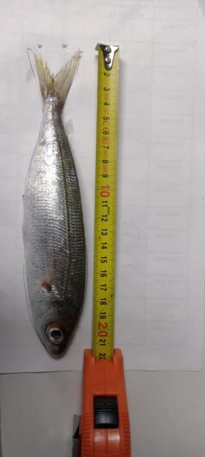
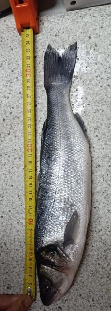
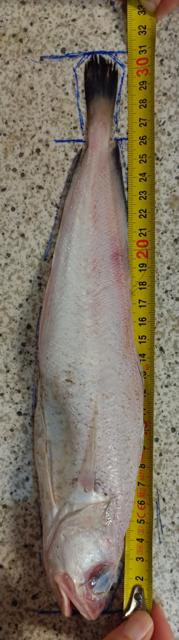
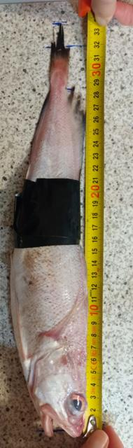
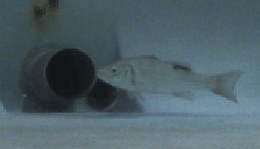
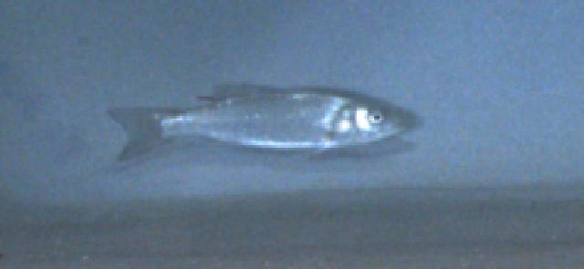
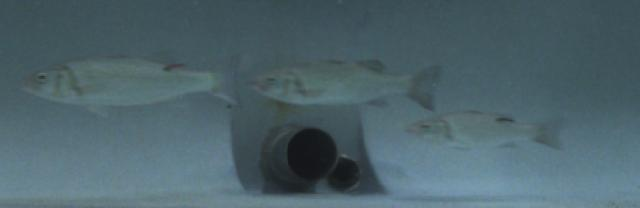
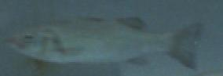

SalmoSonar Visión
datasets · videos · predicciones · atención
Datasets /
FishSizing estéreo UIB
Validar el largo por estéreo contra el largo medido. La muestra trae largos reales, calibraciones estéreo y fotos de cada pez; el video está en rosbags.
- Dominio
- Bajo el agua, estanque; rosbags estéreo (25–48 GB por parte) con largo total medido a mano
- Formato
- Fotos + tablas de verdad
- Clases
- –
- Aquí
- completo · 10 imágenes · 0 objetos
- Licencia
- CC BY 4.0
- Cita
- FishSizing: Stereo Vision Dataset for Non-Invasive Underwater Fish Length Estimation. Zenodo, records 19408363, 19476620, 19535330, 19549892, 19552820, 19557524
Archivos de la fuente
- dataset_to_zenodo/Dataset_description.md 4.45 KB
- dataset_to_zenodo/calibrations/dataset_1/2024_11_12/left.yaml 612 Bytes
- dataset_to_zenodo/calibrations/dataset_1/2024_11_12/right.yaml 621 Bytes
- dataset_to_zenodo/calibrations/dataset_1/2024_11_28/left.yaml 612 Bytes
- dataset_to_zenodo/calibrations/dataset_1/2024_11_28/right.yaml 621 Bytes
- dataset_to_zenodo/calibrations/dataset_1/2025_05_08/left.yaml 600 Bytes
- dataset_to_zenodo/calibrations/dataset_1/2025_05_08/right.yaml 608 Bytes
- dataset_to_zenodo/calibrations/dataset_2/2025_08_21/left.yaml 797 Bytes
- dataset_to_zenodo/calibrations/dataset_2/2025_08_21/right.yaml 806 Bytes
- dataset_to_zenodo/gt_annotations_and_samples/Dataset_Summary_Dataset_A.csv 11.4 KB
- dataset_to_zenodo/gt_annotations_and_samples/Dataset_Summary_Dataset_B.csv 9.14 KB
- dataset_to_zenodo/gt_annotations_and_samples/fish_gt_measures.csv 493 Bytes
- dataset_to_zenodo/gt_annotations_and_samples/model_tracking_annotations.json 9.64 KB
Todas
10 imágenes









